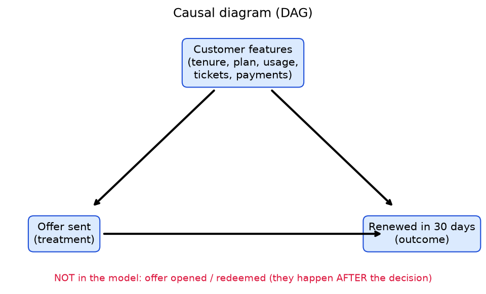
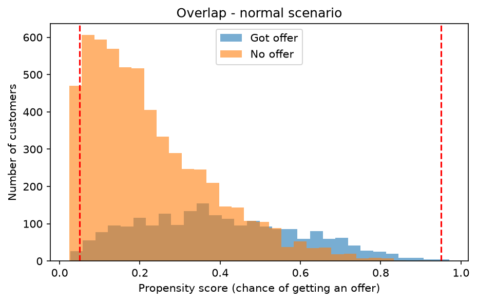
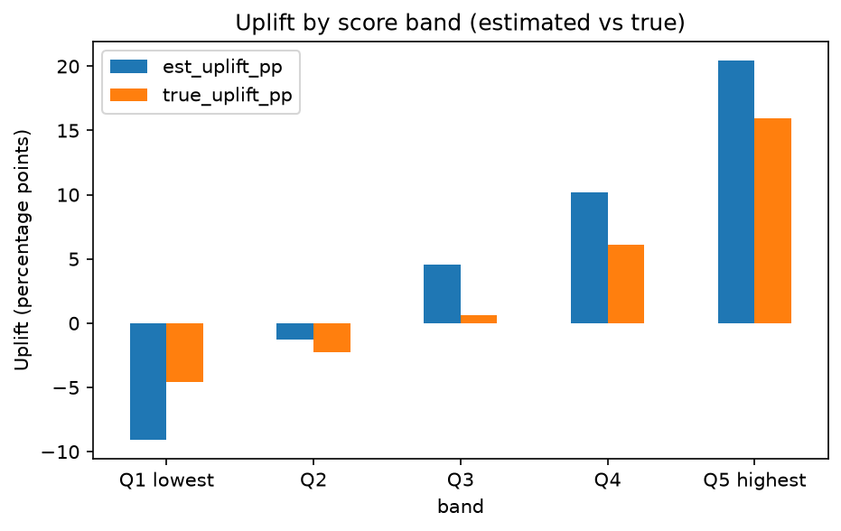
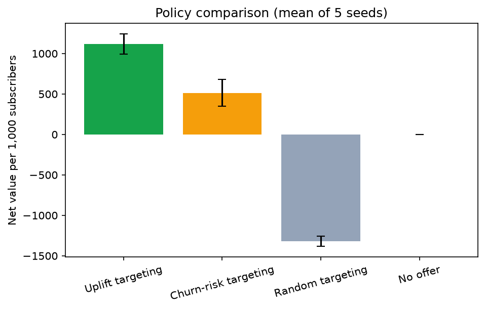
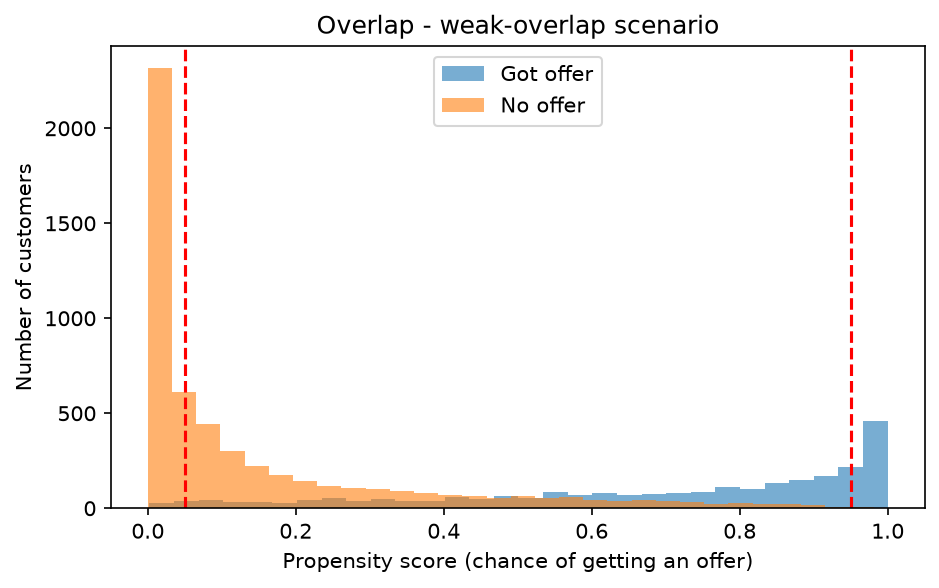

Causal AI for Counterfactual Decision Intelligence - Results
Settings: seed=42, subscribers=8000, budget=20%, renewal margin=100.0, offer cost=10.0
1. Raw comparison (the trap)
- Renewal rate WITH offer: 72.2%
- Renewal rate WITHOUT offer: 75.3%
- Naive difference: -3.2 percentage points (misleading: offers went to low-usage / support-issue customers who renew less anyway)
Average features by group:
| offer_sent |
recent_usage |
support_tickets |
tenure_months |
| 0 |
60.4 |
0.5 |
30.35 |
| 1 |
43.96 |
0.85 |
29.82 |
2. Overlap check
- Customers with weak overlap (propensity outside 0.05-0.95): 394 of 8000 (4.9%)
3. Average effect of sending an offer (percentage points)
- Naive (unadjusted): -3.16
- Doubly robust (cross-fit): +4.93 (95% CI +2.36 to +7.50)
- TRUE average effect: +3.31
- Error of DR estimate: 1.62 pp, error of naive: 6.47 pp
4. How well does each model find uplift? (on held-out customers)
| model |
correlation_with_truth |
RMSE_pp |
| T-learner |
0.734 |
10.75 |
| DR-learner |
0.647 |
11.13 |
| Causal forest |
0.846 |
5.83 |
Uplift by score band (Causal forest = our decision model) - estimate should rise together with the truth:
| band |
est_uplift_pp |
true_uplift_pp |
| Q1 lowest |
-9.08 |
-4.58 |
| Q2 |
-1.25 |
-2.23 |
| Q3 |
4.55 |
0.59 |
| Q4 |
10.18 |
6.12 |
| Q5 highest |
20.44 |
15.93 |
5. Representative customer profiles (estimates for SIMILAR customers, not verified individual outcomes)
| profile |
renew_prob_no_offer |
renew_prob_with_offer |
est_uplift_pp |
propensity |
overlap_ok |
| New, low usage, many tickets |
0.282 |
0.346 |
6.4 |
0.862 |
True |
| 1yr basic, low usage |
0.459 |
0.731 |
27.2 |
0.49 |
True |
| Average customer |
0.725 |
0.791 |
6.7 |
0.212 |
True |
| Loyal premium, high usage |
0.933 |
0.877 |
-5.7 |
0.05 |
False |
| 5yr premium, very high usage |
0.923 |
0.879 |
-4.3 |
0.04 |
False |
| Brand new, very low usage, tickets+late |
0.292 |
0.345 |
5.3 |
0.948 |
True |
6. Decisions on held-out customers
| recommended_action |
count |
| NO OFFER |
2387 |
| SEND OFFER |
640 |
| MANUAL REVIEW |
173 |
- Routed to manual review (weak overlap): 173
7. Policy comparison on held-out set (same 20% limit for every strategy)
|
contacted |
incremental_renewals_per_1000 |
net_value_per_1000 |
| Uplift targeting |
640 |
31.86 |
1185.63 |
| Churn-risk targeting |
640 |
25.77 |
577.28 |
| Random targeting |
640 |
6.49 |
-1351.15 |
| No offer |
0 |
0 |
0 |
8. Repeated over 5 seeds (mean and std)
| strategy |
incremental_renewals_per_1000_mean |
incremental_renewals_per_1000_std |
net_value_per_1000_mean |
net_value_per_1000_std |
| Churn-risk targeting |
25.14 |
1.67 |
514.3 |
167.26 |
| No offer |
0 |
0 |
0 |
0 |
| Random targeting |
6.78 |
0.63 |
-1321.88 |
63.08 |
| Uplift targeting |
29.03 |
4.2 |
1117.46 |
122.93 |
9. Sensitivity: how the ranking changes with offer cost and budget (net value per 1,000)
| offer_cost |
budget |
best_strategy |
uplift_net_value |
churn_net_value |
random_net_value |
| 5 |
5% |
Uplift targeting |
853.4 |
459.9 |
-118.2 |
| 5 |
10% |
Uplift targeting |
1440.8 |
956.5 |
-231.8 |
| 5 |
20% |
Uplift targeting |
2185.6 |
1577.3 |
-351.1 |
| 5 |
30% |
Uplift targeting |
2519.1 |
1893.9 |
-536.5 |
| 10 |
5% |
Uplift targeting |
603.4 |
209.9 |
-368.2 |
| 10 |
10% |
Uplift targeting |
940.8 |
456.5 |
-731.8 |
| 10 |
20% |
Uplift targeting |
1185.6 |
577.3 |
-1351.1 |
| 10 |
30% |
Uplift targeting |
1019.1 |
393.9 |
-2036.5 |
| 20 |
5% |
Uplift targeting |
103.4 |
-290.1 |
-868.2 |
| 20 |
10% |
No offer |
-59.2 |
-543.5 |
-1731.8 |
| 20 |
20% |
No offer |
-78.8 |
-1422.7 |
-3351.1 |
| 20 |
30% |
No offer |
-78.8 |
-2606.1 |
-5036.5 |
| 40 |
5% |
Uplift targeting |
0 |
-1290.1 |
-1868.2 |
| 40 |
10% |
Uplift targeting |
0 |
-2543.5 |
-3731.8 |
| 40 |
20% |
Uplift targeting |
0 |
-5422.7 |
-7351.1 |
| 40 |
30% |
Uplift targeting |
0 |
-8606.1 |
-11036.5 |
10. Weak-overlap scenario (second scenario, extreme historical policy)
- Customers routed to manual review: 3290 of 8000 (41.1%) vs 394 (4.9%) in the normal scenario
11. Where churn-risk targeting and uplift targeting differ
- Only 65% of the contacted customers are the same under both strategies.
- Churn-risk picks that uplift skips: average TRUE uplift = 5.8 pp (avg usage 49) - high risk, but the offer does little.
- Uplift picks that churn-risk skips: average TRUE uplift = 14.5 pp (avg usage 32) - persuadable customers.
12. Assumptions to check before using this on REAL customer data
- No unmeasured confounding: all factors that drove both "who got an offer" and "who renewed" are in our features.
(If a sales rep used a gut feeling we didn't record, estimates will be biased.)
- Overlap / positivity: every type of customer had a real chance of both getting and not getting an offer.
- Consistent treatment (SUTVA): "offer sent" means the same thing for everyone, and one customer's offer
does not change another customer's renewal.
- Correct timing: features are measured BEFORE the decision; the 30-day window starts at the same date for both groups.
- No post-decision variables (opens, redemptions) in the model.
- Stable world: customer behaviour in the future resembles the historical period.
13. Proposed randomized pilot
- Take a fresh group of eligible subscribers (e.g. 10,000).
- Randomly split: 50% policy group (follow the uplift recommendations, within the 20% limit) /
50% control group (random 20% get offers, or business-as-usual).
- Run for one renewal window (30 days) and compare renewals and net value between groups.
- Because assignment is random, the difference is a fair test. Roll out only if the policy beats control
by a pre-agreed margin; keep some customers randomized permanently to keep monitoring.
Charts




